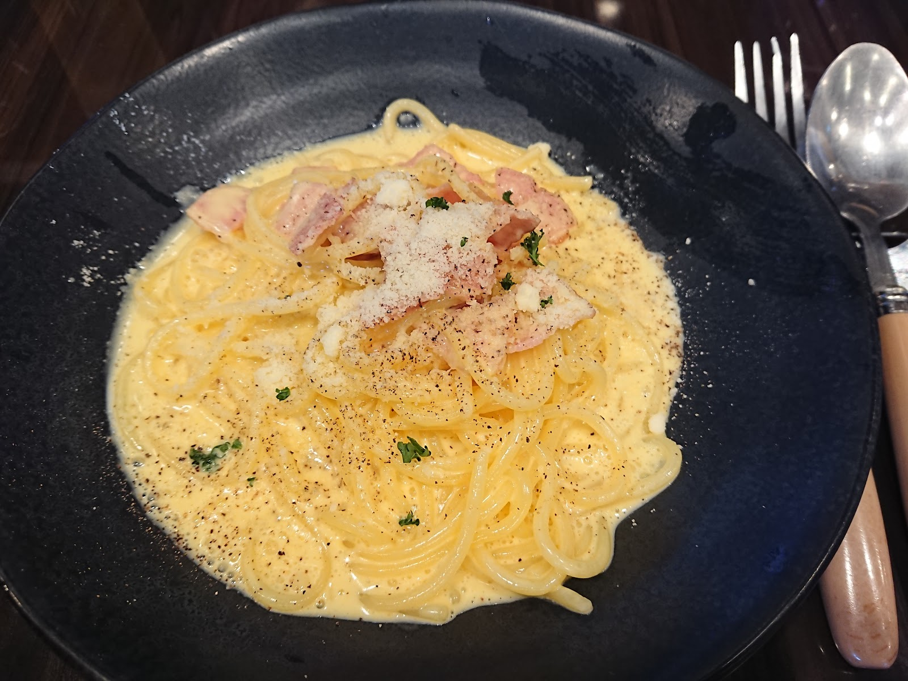
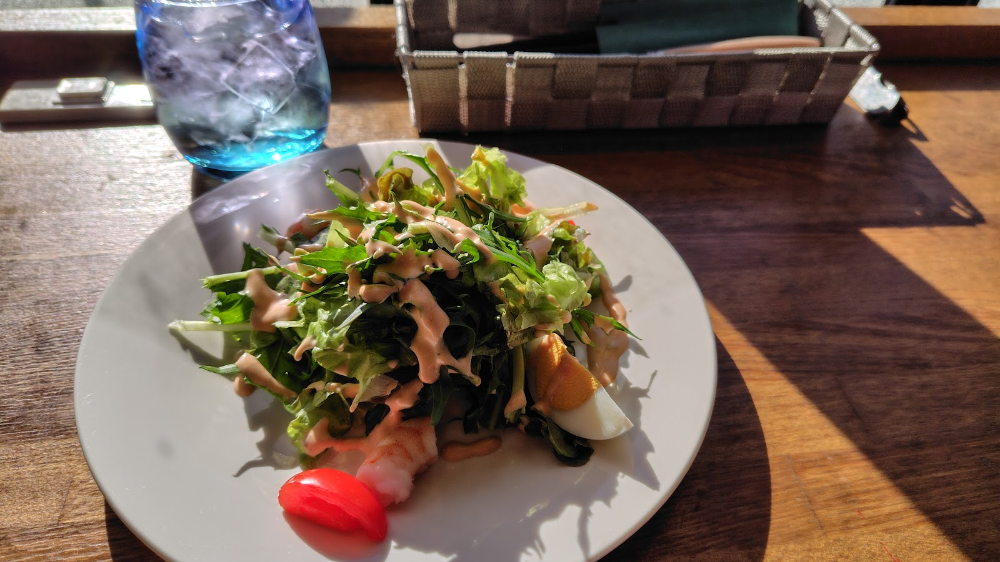
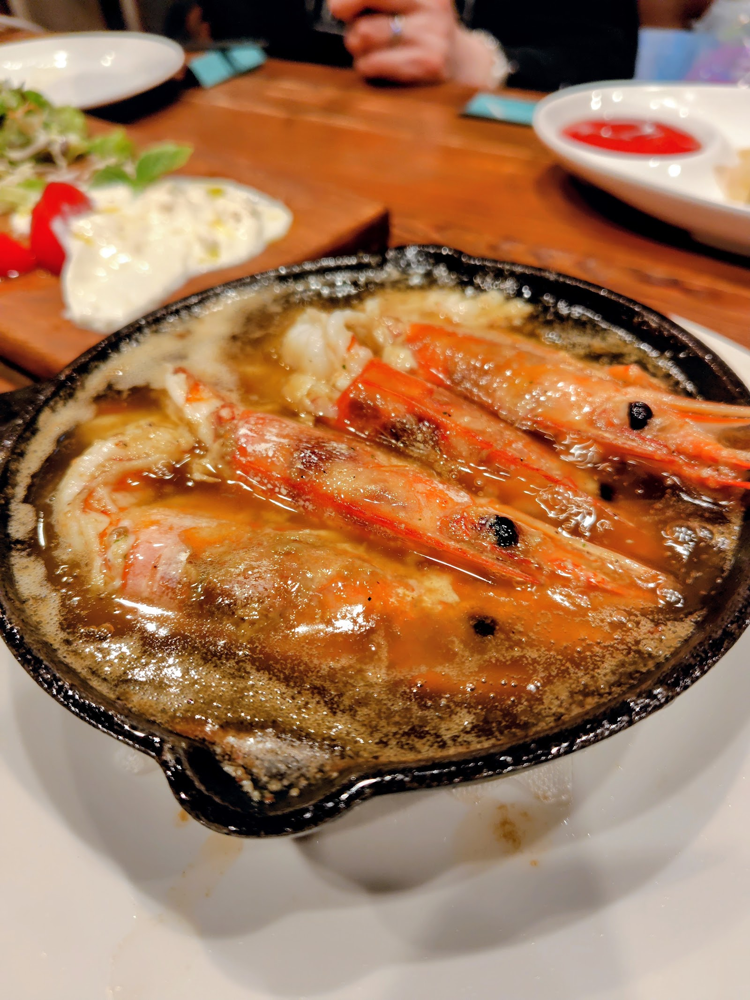

Menu
前菜からパスタ、ピザ、鉄鍋料理まで、イタリア料理の定番を気軽にお楽しみいただけます。 掲載の内容は変更となる場合がございますので、最新の品目・価格は店頭またはお電話にてご確認ください。
前菜
彩り豊かな一皿を、まずは前菜から。食事の始まりにふさわしい、目にも楽しい盛り付けをお楽しみいただけます。

サラダ
野菜の彩りを生かしたサラダをご用意。食事の合間に、軽やかな一皿として楽しんでいただけます。
パスタ
イタリア料理の定番、パスタ。季節の食材を使ったお料理をご用意しております。
ピザ
香ばしく焼き上げたピザも、Prezzaで楽しめる定番のひとつです。一人でも、みんなでシェアしても。

鉄鍋料理
鉄鍋であつあつのまま食卓に運ばれる一皿。湯気とともに、食欲をそそる香りが広がります。
ドリンク
食後にはカフェオレなど、ドリンクもご用意。ゆったりとした時間の締めくくりにどうぞ。
メニューは季節や仕入れ状況により変更となる場合がございます。あらかじめご了承ください。
アレルギーなど個別のご相談がございましたら、お電話にて承ります。
お料理の詳細やご相談はお電話でお気軽に。
 Photo: k kikurin
Photo: k kikurin